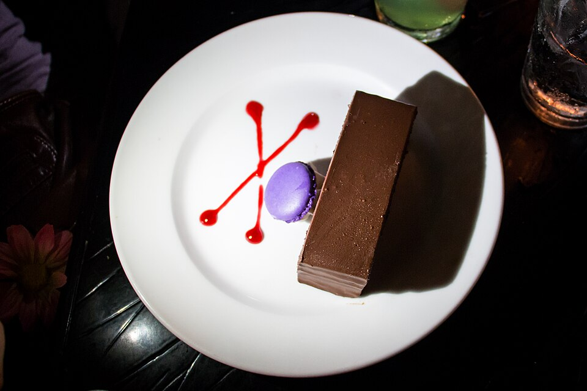

Doces · Tortas e bolos
Bolo de chocolate

Ingredientes
- 50 g de chocolate amargo picado
- ¾ xícara de manteiga
- 1½ xícara de açúcar
- 3 ovos
- 1 colher (chá) de essência de baunilha
- 2 xícaras de farinha de trigo
- 2 colheres (chá) de fermento em pó
- ½ colher (chá) de sal
- ¾ xícara de leite
- 1 colher (sopa) de manteiga (calda)
- 1 xícara de açúcar (calda)
- ½ xícara de chocolate em pó (calda)
- ¼ xícara de leite (calda)
- 120 g de chocolate branco picado para decorar
Modo de preparo
- Derreta o chocolate amargo em banho-maria e reserve.
- Bata manteiga e açúcar até cremoso. Junte ovos um a um, baunilha e chocolate derretido.
- Peneire farinha, fermento e sal. Incorpore alternando com o leite.
- Preaqueça forno médio (180 °C). Unte fôrma de 26 cm com buraco. Asse até firmar. Desenforme após 10 minutos e esfrie.
- Para a calda: derreta manteiga, junte açúcar, chocolate em pó e leite; cozinhe em fogo brando mexendo. Espalhe sobre o bolo frio.
- Derreta o chocolate branco, bata até liso e regue o bolo em fios finos. Deixe firmar e congele.
Observação
Rendimento: 10 porções. Congelamento: cubra com plástico, congele, depois saco. Descongelamento: 2 horas.